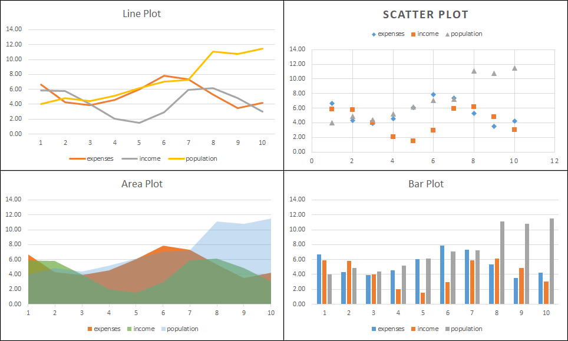
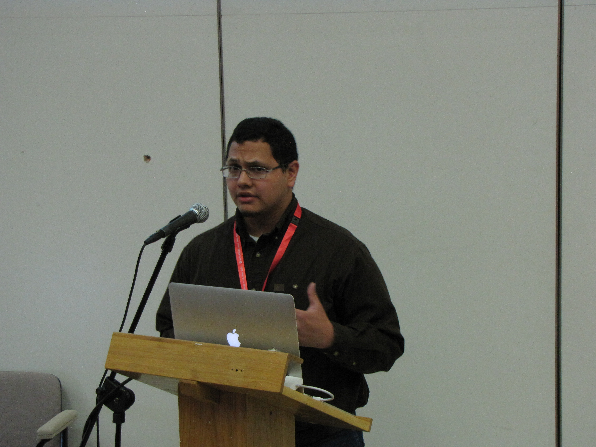

Summary
This competition is composed of a series of 6 sub-tasks for chart data extraction, which when put together as a pipeline go from an input chart image to a CSV file representing the data used to create the chart. Entrants in the competition may choose to participate in any number of sub-tasks, which are evaluated in isolation, such that solving previous sub-tasks is not necessary. We hope that such decomposition of the problem of chart data extraction will draw broad participation from the Document Analysis and Recognition (DAR) community. Additionally, we also evaluate methods that perform the whole chart data extraction pipeline from the chart image without receiving intermediate inputs.
Competition Updates
Training Data is Now Available
| Mar 1 | Registration is Open! |
| Mar 18 | Please check Tools and Data for samples. |
| Mar 22 | Training Data Release |
| Apr 30 | Test Data Release |
| May 6 | Half Page Description of System due |
| May 21 | Results due by email |
 |
Background
Charts are a compact method of displaying and comparing data. In scientific publications, charts and graphs are often used to to summarize results, comparison of methodologies, emphasize the reasoning behind key aspects of the scientific process, and justification of design choices, to name a few. Automatically extracting data from charts is a key step in understanding the intent behind a chart which could lead to a better understanding of the document itself.
|  |
| Example chart types to use in the proposed competition. Note that all these were generated from the same tabular data. |
The DAR community has displayed a continued interest in classifying types of charts as well as processing charts to extract data. In the past decade, multiple applications have been built around automatic processing of charts such as retrieval, textual summarization of charts, making charts more accessible on the web, automatically redesigning charts, automatically assessing chart quality, preservation of charts from historical documents, chart data plagiarism detection, bibliometrics, visual question answering and accelerating discovery of new materials.
Prior competitions related to this area include DeTEXT which concentrated on detecting text in figures and ImageCLEF competition on medical compound figure separation and multi-label classification. However, these competitions do not concentrate on end-to-end data extraction from scientific charts, but include these as a sub-type of scientific figures in general.
Competition Outline
A large number of synthetic chart images (created with matplotlib) with corresponding automatically derived annotations are provided as training data for this competition. The data (i.e. CSV files) used to generate the synthetic chart images are taken from real public data sources. For test data, we will use and report metrics on a large set of synthetic data (matplotlib) and on a smaller set of manually annotated real charts harvested from PubMedCentral.
On April 30, we will release test data, and by May 21 competition participants are expected submit the following:
- Predictions on the test data
- A short system description
- Runnable code that reproduces the results (e.g. Docker container, executable, jar file, etc.)
The sub-tasks considered in this competition are
- Chart Image Classification (e.g. bar, box, line)
- Text Detection and Recognition
- Text Role Classification (e.g. title, x-axis label)
- Axis Analysis
- Legend Analysis
- Data Extraction
- Plot Element Detection/Classification
- Raw Data Extraction
Each subtask is evaluated in isolation, meaning that systems have access to the ideal output (i.e. Ground Truth) of previous subtasks. Subtasks 3-5 are considered parallel tasks and only receive the outputs of subtasks 1 and 2. For example, the input for the Axis Analysis sub-task is the chart image, chart type, text bounding boxes, and text transcriptions. Each sub-task has its own evaluaton metric, detailed on the Tasks page.
Participants are not obligated to perform all subtasks and may submit test results for any set of subtasks they wish. Additionally, methods may be submitted for the complete data extraction task where systems are only given the chart image (no intermediate inputs) and are expected to produce the raw data used to produce the chart (same output as subtask 6b).
Registration
To register, please send an email to chartinfo.icdar2019@gmail.com. Please include the following:
- Names of participants
- Primary contact person
- Affiliation of participants
- Team Name
- List of tasks you are interested in participating in (you are not restricted to this list)
Upon registration, you will be sent additional information to obtain the training and test data when it becomes available.
Acknowledgements
The creation of our manually curated real CHART dataset was partially supported by the National Science Foundation under Grant No.1640867 (OAC/DMR).
Competition Tasks
The main task of the competition is to, given a chart image, extract the raw data that was used to create the chart image. We acknowledge that building an entire chart processing pipeline is time consuming, so to encourage participation from the wider community, we divide the overall task into several smaller sub-tasks that can be solved in isolation. For each sub-task, the ground truth (GT) outputs of some previous sub-tasks are provided as input. Researchers are encouraged to participate in as many or few sub-tasks as they like. However, we also evaluate systems that perform the entire pipeline of sub-tasks without intermediate inputs.
|
Note that since some partial ground truth will be provided for task with dependencies, disjoint subsets of the test set will be used to evaluate these tasks independently for fairness. For all tasks, the chart image is provided. Here is a list of the subtasks and the main task.
1) Chart Image Classification
Knowing the type of chart greatly affects what processing needs to be done. Thus, the first sub-task is to classify chart images by type. Given the chart image, methods are expected to output one of the following 10 classes.
| Pie | Donut | Vertical box | Horizontal box |
| Grouped vertical bar | Grouped horizontal bar | Stacked vertical bar | Stacked horizontal bar |
| Line | Scatter |
For bar charts that have a single set of bars (single data series), it is visually ambigious whether it a Grouped or Stacked bar chart, though their ground truth class indicates one of these classes. In this case we accept either prediction, as long as the orientation (vertical or horizontal) is correct. For example, a vertical bar chart with a single data series can be classified as either Grouped vertical bar or Stacked vertical bar.
Note that pie and donut plots are not used for the remaining sub-tasks.
Metric
The evaluation metric will be the average per-class F-measure. Based on the class confusion matrix, we can compute the precision, recall, and F-measure for each class. The overall score is the average of each classes' F-measure.
To account for charts with multiple possible labels (i.e. single data series bar charts), the per-class precision and recall is modified to not penalize ambiguous cases.
Input/Output
Input: Chart Image
Output: Chart Class
List of sub-tasks
2) Text Detection and Recognition
Understanding the text in charts is necessary to interpret the graphical elements correctly. This sub-task concentrates on detecting and recognizing the text within the chart image. Competing systems are expected to produce tight bounding boxes and transcriptions for each text block. Examples of individual text blocks individual titles, tick labels, legend labels. Text blocks may be a single line, multiple lines (due to text wrapping), and may be horizontal, vertical, or rotated. A predicted bounding box matches a GT bounding box if their Intersection Over Union (IOU) is at least 0.5, and tighter IOU criteria will be used to resolve ties when multiple predictions can match a single GT bounding box.
Metric
There are two evalaution metrics for detection and recognition respectively. For detection, we will sum the per-block IOU and divide by max(#predicted, #GT) for each image. For recognition, we will average normalized Character Error Rate (CER) for each text block in an image. By normalized CER, we mean that the number of character edits to transform a predicted word to GT word is divided by the length of the GT block. False positive and false negative text block detections will be assigned a normalized CER of 1 and an IOU of 0. We will use the same procedure as the ICDAR Robust Reading Competitions to handle split/merged boxes.
For each chart, we will compute both detection and recognition scores. Then we will average the per-chart scores over the whole dataset to ensure that each image contributes equally to the final score. The winner for the sub-task will be determined by the system with the highest harmonic mean of detection and recognition scores.
Input/Output
Input: Chart Image, Chart Class
Output: List of (Text Block BBs, Text Transcription)
List of sub-tasks
3) Text Role Classification
For text to be useful in chart interpretation, its semantic role should be identified. This sub-task focuses on identifying the role of each text block in a chart image, and text bounding boxes and transcripts are provided as input. Competing systems are expected to classify each bounding box into one of the following roles.
| Chart title | Axis title | X-axis values (tick labels) |
| Y-axis values (tick labels) | Legend title | Legend label |
Metric
Similar to the evaluation in sub-task 1 (chart classification), the evaluation metric will be the average per-class F-measure.
Input/Output
Input: Chart Image, Chart Class, List of (Text Block BB, Text Transcription, Text Block Id)
Output: List of (Text Block Id, Text role)
List of sub-tasks
4) Axis Analysis
Locating and interpreting the axes of the chart is critical to transforming data point coordinates from units of pixels to the semantic units. Competing systems are expected to output the location and value of each tick mark on both the X-axis and Y-axis. Tick locations are represented as points and must be associated with the corresponding value (a string). Note that some sets of ticks are ordered or unordered discrete sets with textual non-numeric labels.
For this competition, X-axis will always refer to the axis that represents the independent variable shown, rather than the axis that is visually horizontal. For example, vertical bar and vertical box plots have an X-axis that is vertical. Similarly, the Y-axis is not always the axis that is vertical.
Metric
We use a modified F-measure to score each axis and then take the average F-measure over all axes. Each detected tick is scored for correctness, receiving a score between 0 and 1. Precision is then computed as the sum of the scores divided by the number of predictions. Recall is computed as the sum of the scores divided by the number of ground truth ticks.
A detected tick receives a score of 1 if the predicted point is close to the corresponding GT tick point, where correspondance between predictioned and GT ticks is based on the text BB and transcription. The threshold for close (scoring 1) and the threshold for far (scoring 0) is based on the distance between tick marks in the chart image. Predictions that are between the close and far thresholds are penalized linearly with distance.
Input/Output
Input: Chart Image, Chart Class, List of (Text Block BB, Text Transcription, Text Block Id)
Output: For each of X-axis and Y-axis, List of tuples (tick x position, tick y position, Text Block Id)
List of sub-tasks
5) Legend Analysis
The purpose of chart legends is to associate a data series name with the graphical style used to represent it This is critical to chart understanding when there are multiple data series represented.
Competing systems are expected to associate each legend label text with the corresponding graphical style element within the legend area. Bounding boxes and transcriptions (but not text roles) are given as input. Note that in this task, legend labels are not paired with the corresponding data series found in the plot area. Also, some charts do not have legends, and an empty list should be returned.
Metric
For each GT legend label, if there is an associated predicted graphical style element, we compute the IOU of the predicted BB to the GT graphical style element BB. We then divide the sum of the IOU by max(#predicted, #GT) for each image, and then average this value over all images.
For charts that have no legend, it is expected that participant systems return an empty list to receive the max score for that chart. When there is no legened, specifying any output results in a score of 0 for that chart.
Input/Output
Input: Chart Image, Chart Class, List of (Text Block BB, Text Transcription, Text Block Id)
Output: A list of (Text Block Id, Graphical Style Element BB)
List of sub-tasks
6) Data Extraction
The goal of this task is to convert all of the previously extracted information into a CSV file. We break this task into 2 subtasks: (a) plot element detection and classification (b) data conversion. Competitor systems are expected to produce output for both sub-tasks. It is also permitted for competitors to only perform this sub-task only for certain classes of charts.
6a) Plot Element Detection/Classification
For 6a, the subtask of visual analysis, the goal is to detect and classify each individual element in the plot area. The representation of the element varies by class and is listed in the table below. Note that the output representations (BB or point) are in units of pixels.
| Element Class | Description | Representation |
|---|---|---|
| Bar | Individual bars in bar charts | Bounding Box |
| Line Point | Location of Data Points in line charts | Point |
| Scatter Marker | Location of Data Points in scatter charts | Point |
| Boxplot Median | Median Line of Boxplot | Point |
| Boxplot Box Top | Line that is typically the upper quartile | Point |
| Boxplot Box Bottom | Line that is typically the lower quartile | Point |
| Boxplot Top Wisker | Line that is typically the max value | Point |
| Boxplot Bottom Wisker | Line that is typically the min value | Point |
Even though boxplot elements are visually line segments, we allow for any point on that line segment. Other plot elements, such as boxplot outlier points and error bars, are not evaluated and should not be contained in the output for this sub-task. Note that the chart class is given as input to this task and that each plot element can be found in only one class of chart.
Metric
For an element to be correctly detected, it must be assigned to the correct class. We will use a variation on MSE to evaluate the representation of each element with the correct class. For each element, we compute a score between 0 and 1, where 1 represents an exact prediction, and predictions farther away than a distance threshold, T, receive a score of 0. The score is max(0, 1 - (D/T)^2), where D is the Euclidean distance between the predicted and GT points. The distance threshold, T, is determined to be 1% of the smallest image dimension. Because there are many ways to pair predicted and GT points, we will find the minimum cost pairing (i.e. solve this bi-partite graph matching problem).
For Boxplot elements, we will use distance between the predicted point and the line segment. For Bar chart bars, we will use the distances between corresponding BB corners.
For each chart, the scores will be summed and divided by max(#GT, #Predictions). Then these scores will be averaged across all images.
For line plots, individual lines must be segmented from each other, and will be scored similarly as lines in 6b, except the units of predicted values should be in pixels for this task.
Input/Output
Input: Outputs of tasks 1-5
Output: List of (Element Class, Element Representation)
List of sub-tasks
6b) Raw Data Extraction
Output the raw data that was used to generate the chart image. For the purpose of this competition, we define a simple schema, where each chart is a set of data series, and a data series is a name (string) and a list of (x,y) points. The x values can be either numerical or string values, depending on the X-axis domain. The y values are always numerical.
For box plots, it is not necessary to reproduce the raw data as the plot only shows a statistical summary. Instead, participants are expected to recover the dataset median, upper and lower quartiles, and wisker values. The interpretation of the wiskers (e.g. dataset min/max or 2/98 percentiles) is not always contained in the chart image itself, so we do not require this information at any stage of the competition.
Metric
Data Series names should come from the chart legend (if there is one). If the data series names are not specified in the chart image, then the predicted names are ignored for evaluation purposes.
See this PDF for details
Input/Output
Input: Outputs of tasks 1-5.
Output: Set of Data Series. Data Series = (name, [(x_1, y_1), ..., (x_n, y_n)])
The output of 6a is not given as an input to 6b.
List of sub-tasks
End-to-End Data Extraction
This is the main task of the competition and involves producing the CSV file directly from the chart image without any intermediate inputs. The competing systems will be evaluated on the metric for subtask 6b, and are free to use third party software (e.g. for OCR).
Metric
See Metric for sub-task 6b.
Input/Output
Input: Chart Image.
Output: See output of sub-task 6b.
List of sub-tasks
Competition Schedule
| Deadline | Event |
|---|---|
| March 1 | Registration Opens |
| March 11 | Release of Training Data |
| Apr 30 | Test Data Release |
| May 6 | Half Page Description of System due |
| May 22 | Results due |
Tools and Data
Sample Data
We have sample data for each chart type for download. Each chart has a PNG image produced by matplotlib, and an associated JSON file that contains the annotations for each sub-task. The input and expected output for each sub-task is specified in the JSON file. Key values that begin with an underscore (_) are not required output, but are given as part of the ground truth annotations, in case this information is useful.
In the samples, we have also included a visualization of the JSON annotations on the image. These visualizations were generated with this python script.
Training Data
The synthetic chart dataset is available Here.
The PubMedCentral testing dataset is available Here.
Chart Annotation Tools
The tools used for the annotation of chart images can be found here
Registration
To register, please send an email to chartinfo.icdar2019@gmail.com. Please include the following.
- Names of participants
- Primary contact person
- Affiliation of participants
- Team Name
- List of tasks you are interested in participating in (you are not restricted to this list)
Upon registration, you will be sent additional information to obtain the training and test data when it becomes available.
Registration and Contact Information
For any inquiries, please email us at chartinfo.icdar2019@gmail.com.
Registration
To register, please send an email to chartinfo.icdar2019@gmail.com. Please include the following.
- Names of participants
- Primary contact person
- Affiliation of participants
- Team Name
- List of tasks you are interested in participating in (you are not restricted to this list)
Upon registration, you will be sent additional information to obtain the training and test data when it becomes available.
Organizer Information
| Bhargava Urala |
Bhargava is a Ph.D. candidate at the Department of Computer Science, University at Buffalo, SUNY. His primary research interest is detecting, recognizing and retrieving text in images and videos. He has published in ICFHR, ICML, ICPR, MOCR and GREC, including articles on automated data extraction from scientific plots. |
| Chris Tensmeyer |
Chris joined Adobe Research in the Document Intelligence Lab in 2018, and received his PhD in Computer Science from Brigham Young University in 2019. His research interests lie at the intersection of document analysis and deep learning with tasks such as chart and table understanding, layout analysis, and handwriting recognition. He is also interested in deep learning models and training with applications to computer vision and natural language processing. |
|  Kenny Davila |
Kenny is a Post-doctoral Associate at the Center for Unified Biometrics and Sensors, University at Buffalo, SUNY. He has created and released open source tools for labeling and evaluation of Lecture Video Summarization approaches, included with the release of the AccessMath Lecture Video Dataset, as well as a baseline method for summarization of lecture videos (ICDAR 2017). His open source visual search engine (Tangent-V) received the Best Paper Award at ICFHR 2018. |
| Ritwick Chaudhry |
Ritwick graduated from Indian Institute of Technology, Bombay with a major in Computer Science and Engineering, and joined Adobe Research in June 2018. His research interests lie in question/answering, video analysis and 3D reconstructions. |
| Sumit Shekhar |
Sumit joined Adobe Research Labs India as a Research Scientist in August 2014. He completed his doctoral studies at University of Maryland under Prof. Rama Chellappa. Previously, he received B. Tech. in Electrical Engineering from IIT Bombay. His research interests are in computer vision and machine learning. At Adobe, he is a part of Document Intelligence group, working on topics like document structural analysis and question/answering. He has also explored video content analysis and AR/VR interfaces during his work at Adobe. |
| Srirangaraj Setlur |
Ranga is a Principal Research Scientist at the Center of Excellence for Document Analysis and Recognition, Department of Computer Science and Engineering and Co-Director of the NSF Center for Identification Technology Research at the University at Buffalo, SUNY. He has contributed significantly to the development of real-time automated systems for handwriting recognition and multilingual OCR well as to the development of methodologies for evaluating the performance of large scale recognition systems. He is on the editorial board of IJDAR and is a co-author of the Springer Guide to OCR of Indic scripts. He is a Senior Member of IEEE. |
 Venu Govindraju |
Venu Govindaraju is responsible for managing UB's research enterprise, university/industry relations and economic development, contributing to the economic and cultural vitality of New York State and around the world. Govindaraju's research focuses on machine learning and pattern recognition and his seminal work in handwriting recognition was at the core of the first handwritten address interpretation system used by the U.S. Postal Service. Dr. Govindaraju has authored more than 400 scientific papers including over 80 journal papers. |